Wizard – Basic Settings


- SkyAps™
- Administration
- JAM™
- SoDA™
- SoDA™ – Overview
- Analytics
- Reports
- Potential SOD Violations (by SoD Rules)
- Actual SoD Violations (by SoD Rules)
- Potential SOD Violations (by T-Groups)
- Actual SOD Violations (by T-Groups)
- Internal Violations
- Cross Reference Violations
- Role's Assigned Users & Transactions
- Excessive Authorizations
- Transaction Usage
- User's Assigned Transactions
- User's Assigned Roles & Profiles
- Where Used
- Simulations
- SoD Rules
- T-Groups
- Business Content
- Critical Objects
- Support
- Auxiliary Functions
- 4C™
Need more support?
Wizard – Basic Settings
Alert Wizard is a module of Skywind 4C™ designed for creation and customization of Alerts. Alert Wizard consists of 6 steps:
- Basic Settings (add alert’s name, assign source system, running mode etc.)
- Format (choose the fields for alert’s output)
- Parameters (choose alert’s parameters, assign parameter values)
- Recipients (define the population of alert’s recipients, choose how to distribute notifications)
- Authorizations (who is allowed to access/edit the alert)
- Scheduling (define the frequency of alert’s run and choose what to do with alert’s history)

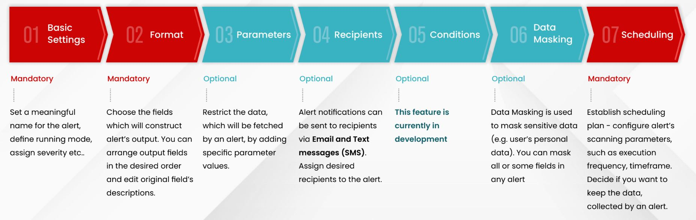
To move along the Wizard, you can click on the relevant step in the upper part of the Wizard screen:

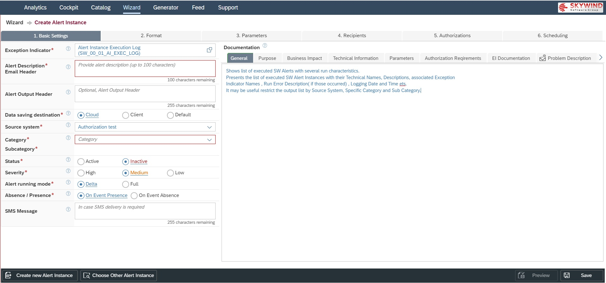
For each parameter you can access the information about it by clicking on the <Question mark> button near it. The info will be displayed in the popover:

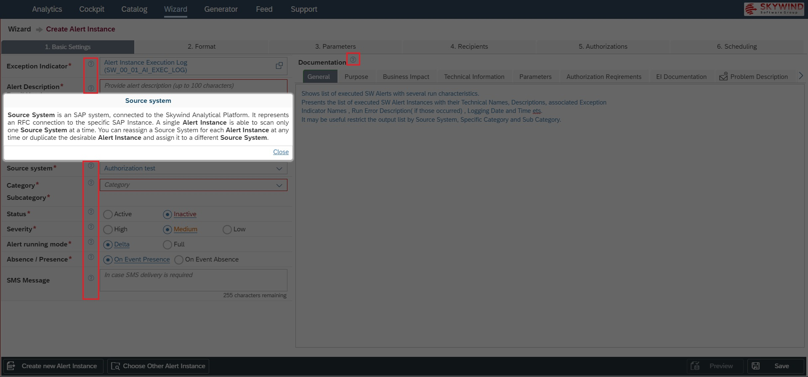
Exception Indicator is a Function Module which resides in Skywind Analytical Platform in AWS. All Alert Instances are based on Exception Indicators. One Exception Indicator can serve as a foundation for multiple Alerts. The Alerts would differ by having different sets of parameters and parameter values. Each Exception Indicator has it’s own unique set of parameters for configuration of single or multiple Alert Instances. For more details about Alert Instances concept please refer to 4C™ – Glossary.
When creating an Alert from scratch, you first have to choose an Exception Indicator to found your Alert. A popover with available Exception Indicators is displayed automatically. If you want to change it later, click on the icon on the right of the field to open the popver once again.
The table data can be sorted and filtered by clicking on the column headers, as anywhere in the system. Choose an Exception Indicator and click the <Select> button at the popover footer.

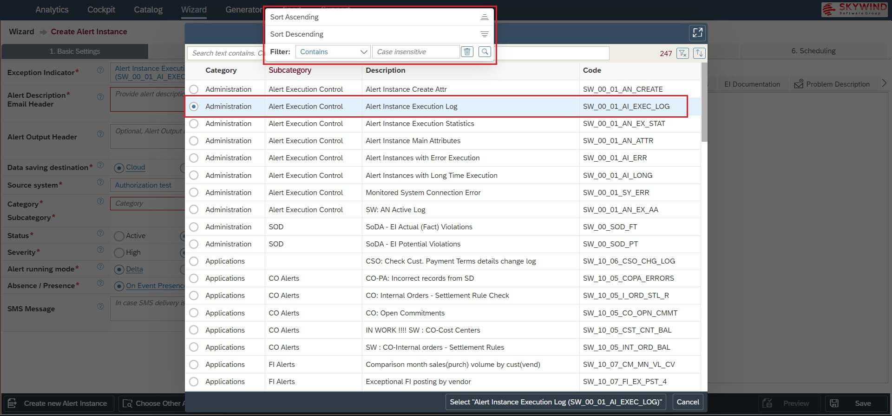
Alert Description / Email Header serves as a short meaningful description of the Alert Instance and its Email Header. If alert notification is distributed via Email, the text from this field will be displayed in the Email’s subject:


Alert Output Header is the header, that is displayed in an Email’s body above the output table:


Data saving destination is the result of Skywind 4C™ new architecture. It is about the place to keep data, collected by alerts and reports.
- Cloud – when chosen, this mode saves and keeps all collected alerting data on Skywind Cloud Platform.
- Client – when chosen, the collected data will be kept in the client’s SAP system/s. When opted, it enhances security by not leaving any data on Skywind Cloud Platform.
- Default. Skywind 4C™ allows to define Data saving destinations on 2 levels:
- Client level. This level defines a default mode for all new Alert Instances. The mode can be overwritten in alert level (e.g. when a new alert is being customized). This mode is available in the Administration application.
- Alert Instance level. During alert’s creation, the “Default” option is set, meaning the alert inherits the Client level mode. This can be overwritten – the mode change will affect only current Alert Instance.
In both cases (Cloud / Client), the data is kept in SAP Cluster table in encrypted, binary format.

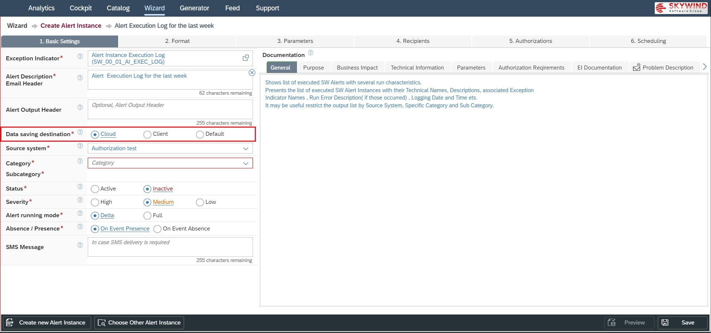
Source System is an SAP system, connected to the Skywind Analytical Platform. It represents an RFC connection to the specific SAP Instance. A single Alert Instance is able to scan only one Source System at a time. You can reassign a Source System for each Alert Instance at any time or duplicate the desirable Alert Instance and assign it to a different Source System:

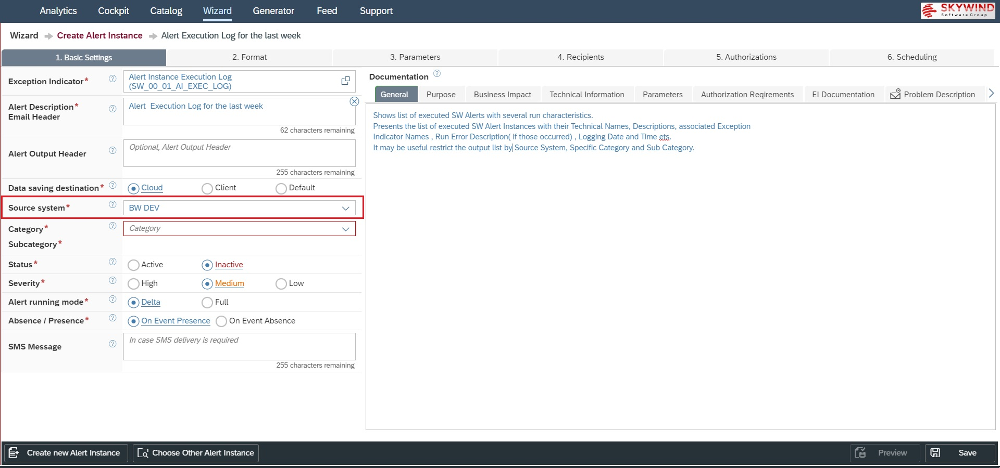
Alert Instances have to be assigned to Categories and Sub-Categories. Skywind 4C™ comes with a set of pre-defined Categories and Sub-Categories. Assign your Alert Instance to an appropriate Category from the list:

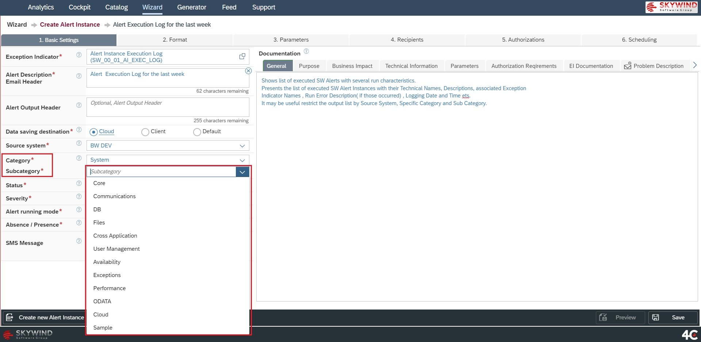
Status of Alert Instance can be Active or Inactive. Active status means that the Alert scans the Source System according to its scheduled frequency (e.g. every 5 minutes or once in an hour etc.). Inactive status means that the Alert performs no scans:

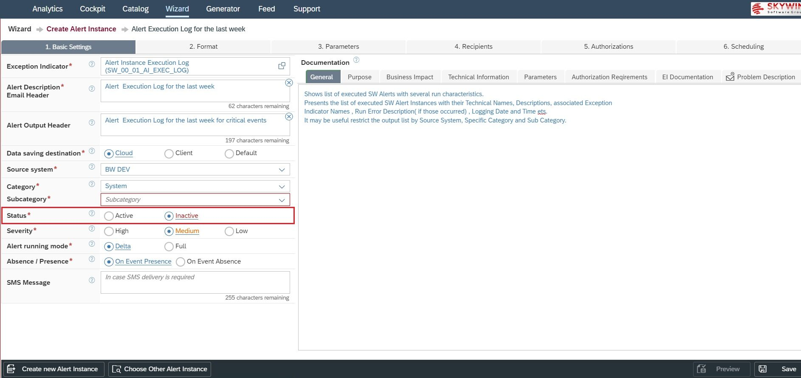
You can define / change Severity for each Alert Instance. Severity has a purely informative purpose, helping you to distinguish between more or less critical Alerts:

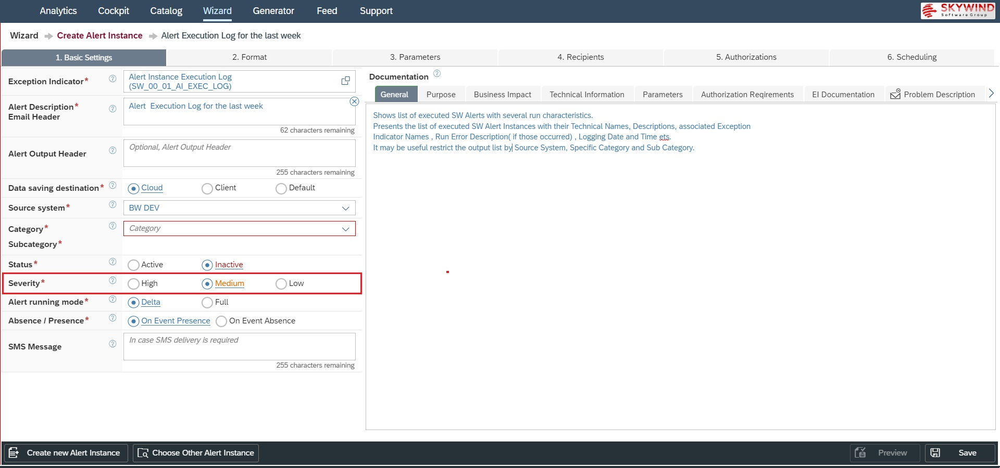
Alert running mode. Alert Instances run in either Delta or Full mode. The difference between the “Full” and the “Delta” modes is that Delta mode brings only the new data, meaning if the new event/s are occurred since the last Alert’s scan, only these events will be sent to recipient/s. The purpose of the Delta mode is not to send the previously sent data to a recipient again (e.g., inform me only once). The Full mode will send the old and the new data together (e.g., cumulative) in each notification. The necessity behind this could be if the recipient wants to be notified with the same data, until the problem is solved or when the Alert has less operative but more reporting nature:

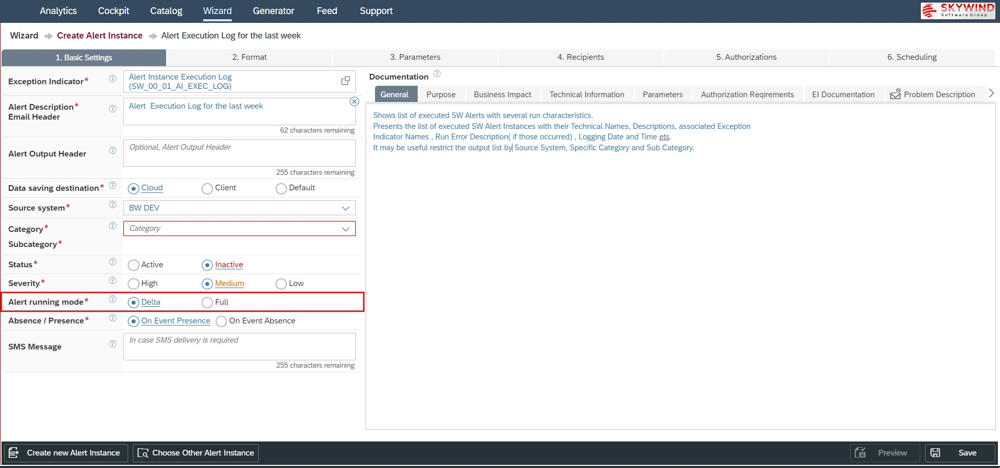
Absence/Presence. Each Alert Instance can track, catch and notify about one of 2 opposite situations:
- On Event Presence – when an expected (monitored) event has actually occurred.
- On Event Absence – when an expected (monitored) event did not occur.
Ability to track and notify on both event Presence and Absence is a very powerful platform’s feature, allowing to monitor all possible cases when something good or bad has happened or when nothing has happened at all. However, to monitor both situations, 2 Alerts have to be created – one for each case:

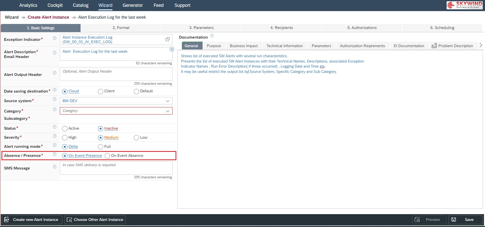
SMS Message. In case, you intend to send alert notifications as text messages, fill this field with appropriate text. Note, that SMS messages will not include any notification data. You will receive Alert notification into your mobile phone with the message, placed in this placeholder:

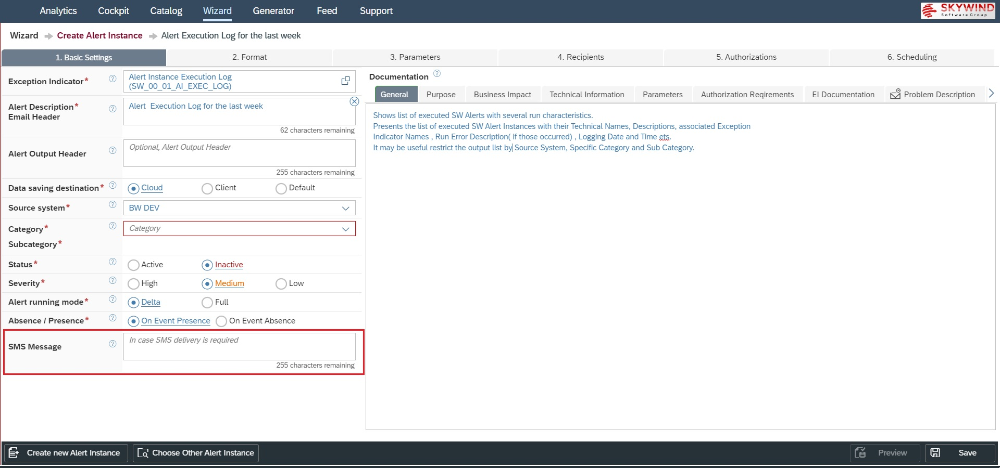
Documentation section consists of several blocks. Choose appropriate blocks and type information about the Alert’s Purpose, Business impact etc. Documentation text will be then available to read in Alerting Cockpit and other places:

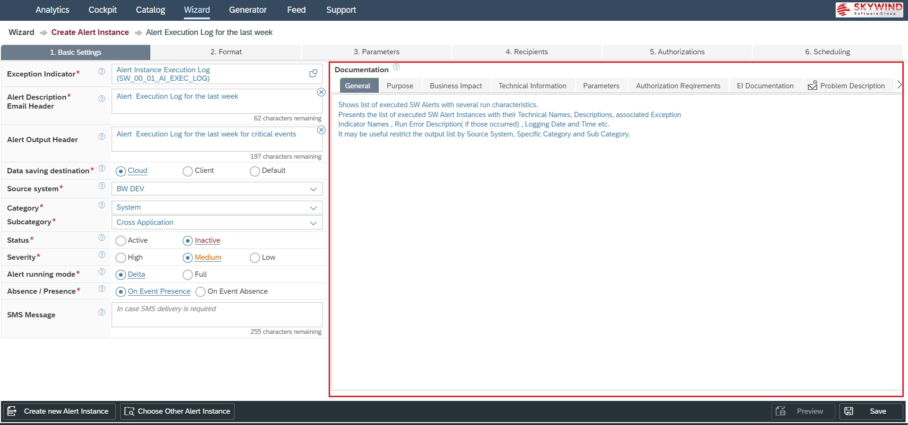
To clear all settings without saving and start over again with creating an Alert Instance click on the <Create new Alert Instance> button:

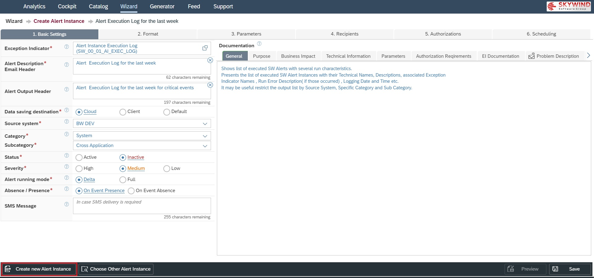
To clear all settings without saving and choose another Alert Instance for editing click on the <Choose Another Alert Instance> button:

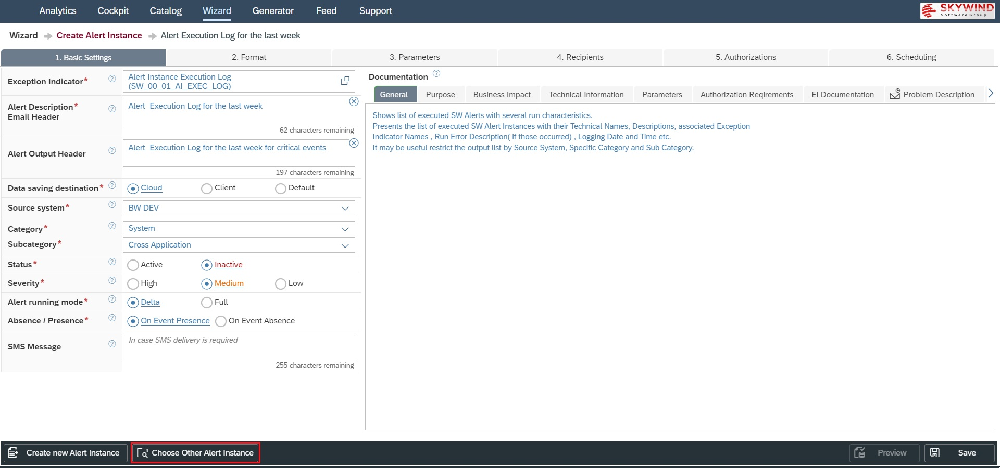
Once you click on the button, the list of available Alert Instances will be displayed and you can then select the desired Alert Instance:

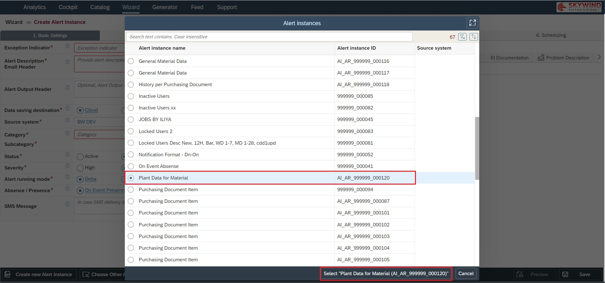